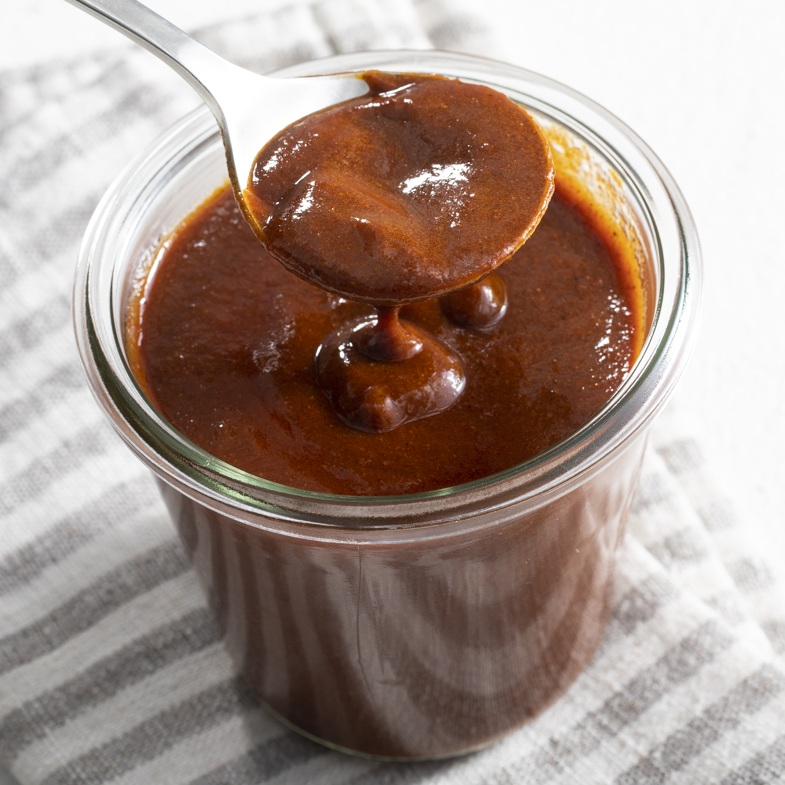

Ingredients
- 1/4 cup Veg oil
- 1/4 cup Chili Powder
- 2 Tbls Flour
- 1 1/2 cups Water
- 1(8 ounce) can Tomato Sauce
- 1/4 tsp ground cumin
- 1/4 tsp garlic powder
- 1/4 tsp onion salt
- Salt to taste!
Directions
Step 1
Heat oil in a skillet over medium-high heat. Stir in chili powder and flour, reduce heat to medium, and cook until fragrant and deepened in color, stirring constantly to prevent the flour from burning, about 1 minute.
Step 2
Gradually stir in water, tomato sauce, cumin, garlic powder, and onion salt until smooth. Continue cooking over medium heat until thickened slightly, about 10 minutes. Season with salt.
Nutrition Facts
Per Serving: 116 calories; protein 1.4g; carbohydrates 7g; fat 10.1g; sodium 408.4mg.